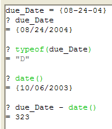

Variable Types
Why is a variables type important? Primarily because Alpha Anywhere has to know what kind of information you are referring to when you use a variable.
For example, suppose you have an application in which you ask someone to enter the date a bill comes due. And you want to display on a form the number of days remaining from todays date until that due date. You can create a variable, lets call it due_Date, on the form and define it as a date variable. Now Alpha Five knows that the information your user will enter in this variable must be a valid date.
Also, since due_Date is a date value, you can create an expression like this:
|
due_Date date() |
to calculate the number of days between todays date (the date the application is run) and the due_Date. In this expression, an Xbasic function named DATE() returns a date value of todays (the present) date. (So on December 31, 2002, date will return {12/31/2002}.) When a minus sign is used with two date values, Alpha Anywhere knows to calculate the number of days between those two dates. And Alpha Anywhere knows due_Date holds a date value because you defined it that way.
_Using_a_date_variable_in_an_expressionwith_an_Xbasic_function_>Exercise 4 - Using a date variable in an expression (with an Xbasic function)
Type the following in the Interactive Window : (Be sure to use the curly braces).
Now type:
Next type:
Next type:
Finally, type:
|
due_Date = {08-24-04} |
This defines due_Date as a date type variable and assigns it the value of August 24, 2004.
|
? due_Date |
Alpha Anywhere displays the date value currently stored in due_Date.
|
? Typeof(due_Date) |
Alpha Anywhere displays the type of the due_Date variable as D (signifying date type).
|
? date() |
On the date this was written, date() returned {10/06/2003}, so you see that the date() function returns a value of type date.
|
? due_Date - date() |
When this was written, Alpha Anywhere calculated and displayed that 323 days remained between October 6, 2003 and the due date of August 24, 2004. Figure 19 shows the sequence of commands and resulting output. Picture
{kind=link}

Figure 19
Naming Variables
When you choose names for a variable, it is a good idea to pick a name that identifies its type and what information the variable will store. So, if you need a variable to count the number of matches in a search request, you might choose a name like: items_Found.
Some programmers make it a practice to include a letter signifying the variables type at the beginning. So they might name the variable above as: n_items_Found.
To signify that n_items_Found holds a numeric value. Some people will capitalize every word in a variable name, others like to leave the first word uncapitalized and only capitalize the rest. It makes sense to pick a system that will help you quickly remember what a variable is for when you read your program at a later time.
Next
Explicit Declaration of Variables